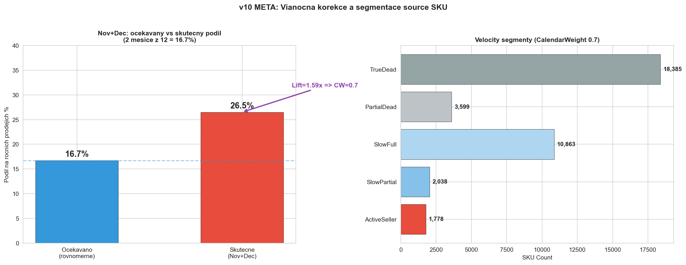
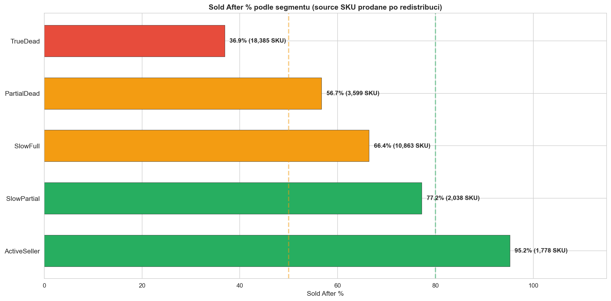
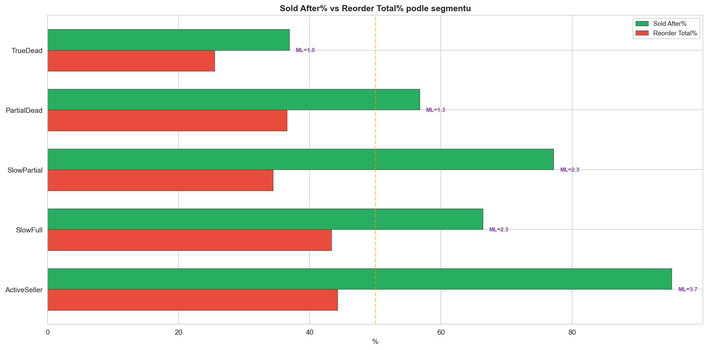
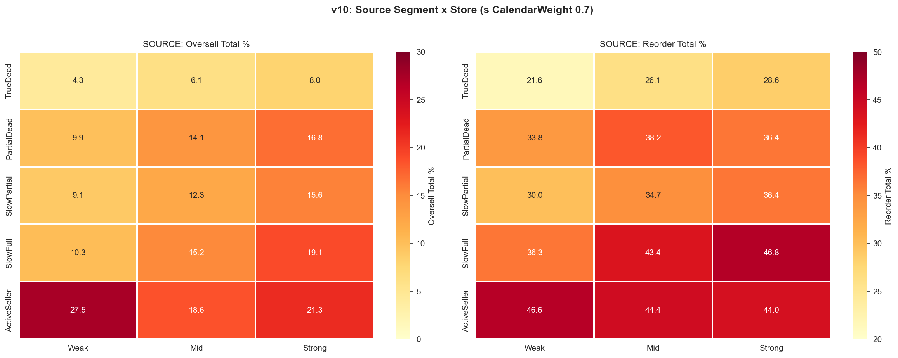
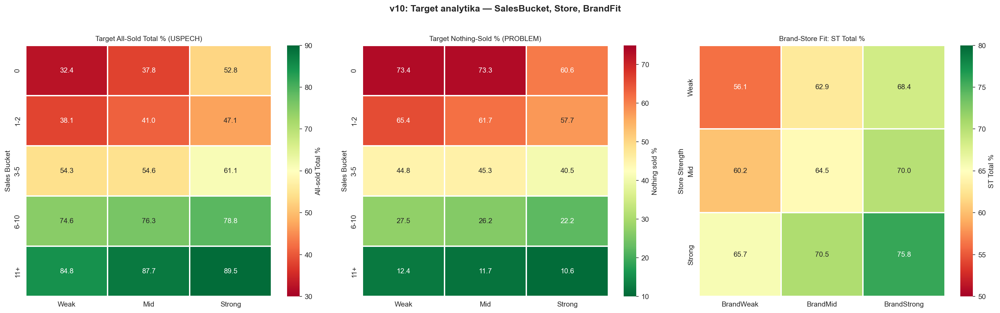
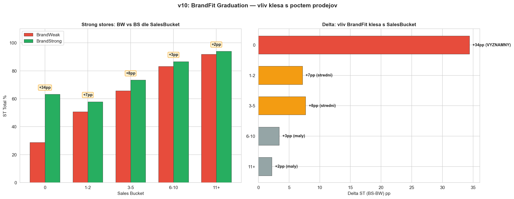
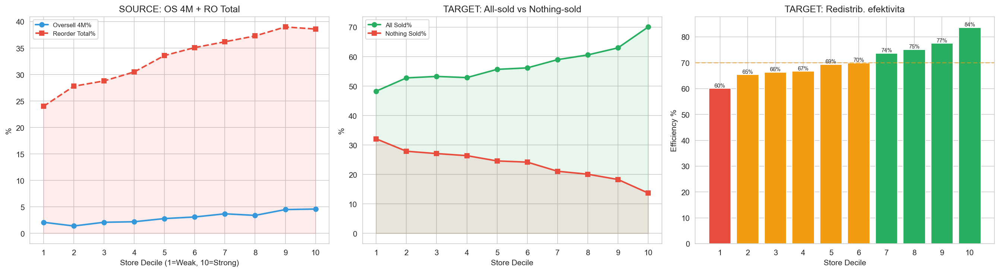
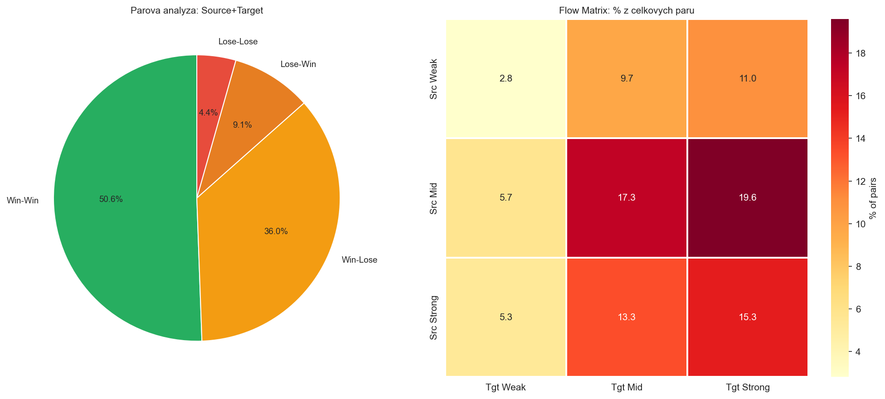
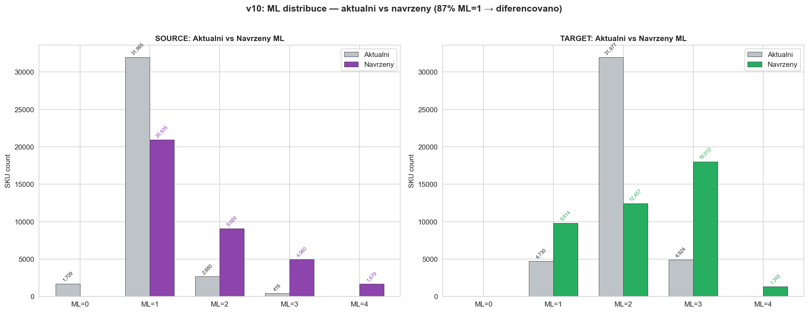

v10 — Meta-analyza verzi v2-v9 META
CalculationId: 233 | ApplicationDate: 2025-07-13 | Tenant: Douglas DE | Generovano: 2026-03-25 19:23
Tato verze syntetizuje zjisteni ze vsech predchozich verzi (v2-v9). Backtest neni soucasti v10.
1. Celkove KPI
1.1 Zakladni parametry (konstantni napric verzemi)
| Parametr | Hodnota |
|---|
| Redistribucni pary | 42 404 |
| Source SKU | 36 770 |
| Target SKU | 41 631 |
| Redistribuovano ks | 48 754 |
| Prodejen (excl. ecomm) | 353 |
| Orderable (A-O + Z-O) | 35 061 (95.4%) |
1.2 Klicove metriky
3.0-3.2%
Oversell 4M (cil 5-10%)
Oversell je v cili (3.0-3.2%, cil 5-10%). Hlavni problem je reorder na 34.1% — cil snizit o 10-15%.
Target: 42% SKU nemelo zadny prodej za 4M, ale 60% se prodalo uplne za celou dobu. Redistribuce funguje dobre tam,
kde produkt jde na odbyt, ale velka cast je zbytecna.
1.3 Source KPI — evoluce
| Metrika | v2-v8 | v9 | Pozn. |
|---|
| Oversell 4M qty | 1 464 (3.0%) | 1 541 (3.2%) | v9 nezavisly prepocet |
| Oversell Total qty | 5 578 (11.4%) | 5 626 (11.5%) | |
| Reorder 4M qty | 7 980 (16.4%) | 8 045 (16.5%) | |
| Reorder Total qty | 16 615 (34.1%) | 16 615 (34.1%) | Stejne |
1.4 Target KPI — evoluce
| Metrika | v2-v4, v6-v8 | v5 | v9 |
|---|
| ST 4M avg | 46.3% | 45.3% | 45.4% |
| ST Total avg | 70.1% | 69.2% | 69.2% |
| ST-1pc 4M avg | 70.6% | 58.2% | 62.9% |
| Nothing-sold 4M | 17 552 (42.2%) | 17 552 | 17 468 (42.0%) |
| All-sold Total | 24 862 (59.7%) | 24 862 | 24 860 (59.7%) |
2. SOURCE — Velocity segmentace
2.1 Evoluce klasifikace
| Verze | System | Segmenty |
|---|
| v2-v5 | Pattern-based | Dead, Dying, Sporadic, Consistent, Declining |
| v6-v7 | Velocity-normalized | TrueDead, PartialDead, BriefNoSale, SlowFull, SlowPartial, ActiveSeller |
| v8-v9 | Velocity + CalendarWeight | Stejne segmenty, 734 SKU reklasifikovano z ActiveSeller do SlowFull/SlowPartial |
2.2 CalendarWeight (vianocna korekce)

Douglas = parfumerie: Nov+Dec = 26.5% rocnich prodejov (ocekavano 16.7%, lift 1.59×).
CalendarWeight 0.7 aplikovany na pololeti s Nov+Dec. 734 SKU reklasifikovano z ActiveSeller (sold_after 91%).
CW 0.7 je konzervativni — skutecny by odpovidal ~0.63.
2.3 Velocity segmenty — finalni (v8-v9)
| Segment | Definice | SKU | Podil | Sold After% | Redist qty |
|---|
| TrueDead | 0 prodejov, stock ≥270d | 18 385 | 50.0% | 36.9% | 22 260 |
| PartialDead | 0 prodejov, stock 90-270d | 3 599 | 9.8% | 56.7% | 4 664 |
| SlowFull | Velocity <0.5, stock ≥270d | 10 863 | 29.5% | 66.4% | 14 586 |
| SlowPartial | Velocity <0.5, stock 90-270d | 2 038 | 5.5% | 77.2% | 3 130 |
| ActiveSeller | Velocity ≥0.5 | 1 778 | 4.8% | 95.2% | 3 941 |


2.4 Segment × Store

| Segment | Store | SKU | OS Total% | RO Total% | Sold After% | Redist qty |
|---|
| TrueDead | Weak | 5,233 | 4.3% | 21.6% | 32.6% | 6,245 |
| TrueDead | Mid | 8,240 | 6.1% | 26.1% | 37.3% | 10,063 |
| TrueDead | Strong | 4,912 | 8.0% | 28.6% | 40.7% | 5,990 |
| PartialDead | Weak | 940 | 9.9% | 33.8% | 48.7% | 1,125 |
| PartialDead | Mid | 1,610 | 14.1% | 38.2% | 57.9% | 2,072 |
| PartialDead | Strong | 1,049 | 16.8% | 36.4% | 62.2% | 1,467 |
| SlowPartial | Weak | 421 | 9.1% | 30.0% | 71.7% | 626 |
| SlowPartial | Mid | 800 | 12.3% | 34.7% | 72.9% | 1,192 |
| SlowPartial | Strong | 817 | 15.6% | 36.4% | 84.2% | 1,312 |
| SlowFull | Weak | 2,122 | 10.3% | 36.3% | 56.0% | 2,710 |
| SlowFull | Mid | 4,697 | 15.2% | 43.4% | 63.9% | 6,276 |
| SlowFull | Strong | 4,044 | 19.1% | 46.8% | 74.7% | 5,598 |
| ActiveSeller | Weak | 99 | 27.5% | 46.6% | 90.9% | 193 |
| ActiveSeller | Mid | 431 | 18.6% | 44.4% | 91.9% | 1,003 |
| ActiveSeller | Strong | 1,248 | 21.3% | 44.0% | 96.7% | 2,745 |
Gradient StoreStrength: Silnejsi obchod = vyssi oversell + reorder + sold_after (2-3× mezi Weak a Strong).
ActiveSeller+Strong: 96.7% sold_after ale 21.3% oversell — nejvyssi riziko.
2.5 Declining — kam se zaradil
| Puv. Pattern | Novy Segment | SKU | OS Total% | Sold After% |
|---|
| Declining | SlowFull | 324 | 28.2% | 78.7% |
| Declining | ActiveSeller | 35 | 49.2% | 100.0% |
Declining produkty jsou aktivne se prodavajici SKU s klesajicim trendem — vysoka sold_after (79-100%)
ukazuje, ze redistribuce z nich je velmi rizikova.
2.6 LastSaleGap
| Gap | SKU | OS Total% | RO Total% | Sold After% |
|---|
| 0-30d | 1,472 | 13.1% | 35.2% | 90.0% |
| 31-90d | 2,280 | 14.8% | 39.4% | 85.2% |
| 91-180d | 3,116 | 15.6% | 45.5% | 76.4% |
| 181-365d | 7,850 | 18.1% | 44.0% | 61.8% |
| 365-730d | 6,588 | 9.0% | 30.9% | 42.4% |
| 730d+/Never | 15,464 | 6.9% | 26.1% | 39.4% |
Potvrzeny modifier (v7-v9): LastSaleGap ≤90d → sold_after 85-90% → +1 ML.
2.7 Source BrandFit
| Segment | BW Sold After | BS Sold After | Delta | Modifier |
|---|
| TrueDead | 35.3% | 43.4% | +8.1pp | +1 ML |
| SlowFull | 64.0% | 74.7% | +10.7pp | +1 ML |
| SlowPartial | 72.3% | 82.1% | +9.8pp | +1 ML |
| PartialDead | 55.4% | 60.7% | +5.3pp | +1 ML |
| ActiveSeller | 92.2% | 96.8% | +4.6pp | ignorovat (SA>92%) |
BrandStrong source: +5-11pp sold_after. Modifier +1 ML pro TrueDead/SlowFull/SlowPartial. Ignorovat u ActiveSeller.
3. TARGET — Sell-Through a segmentace
3.1 SalesBucket × Store

| Bucket | Store | SKU | ST 4M% | ST Total% | Nothing-sold 4M% | All-sold Total% |
|---|
| 0 | Weak | 139 | 23.5% | 35.6% | 73.4% | 32.4% |
| 0 | Mid | 341 | 23.4% | 41.6% | 73.3% | 37.8% |
| 0 | Strong | 254 | 37.2% | 54.6% | 60.6% | 52.8% |
| 1-2 | Weak | 1,972 | 26.5% | 47.2% | 65.4% | 38.1% |
| 1-2 | Mid | 4,507 | 28.9% | 51.3% | 61.7% | 41.0% |
| 1-2 | Strong | 3,640 | 32.3% | 56.4% | 57.7% | 47.1% |
| 3-5 | Weak | 2,601 | 41.6% | 65.8% | 44.8% | 54.3% |
| 3-5 | Mid | 7,760 | 41.0% | 65.9% | 45.3% | 54.6% |
| 3-5 | Strong | 9,052 | 45.5% | 71.8% | 40.5% | 61.1% |
| 6-10 | Weak | 879 | 59.2% | 82.4% | 27.5% | 74.6% |
| 6-10 | Mid | 3,319 | 59.9% | 84.4% | 26.2% | 76.3% |
| 6-10 | Strong | 4,835 | 63.2% | 86.2% | 22.2% | 78.8% |
| 11+ | Weak | 178 | 73.6% | 91.9% | 12.4% | 84.8% |
| 11+ | Mid | 806 | 72.6% | 93.3% | 11.7% | 87.7% |
| 11+ | Strong | 1,348 | 77.4% | 94.0% | 10.6% | 89.5% |
SalesBucket = nejsilnejsi prediktor: ST roste z 35-55% (bucket 0) na 92-94% (bucket 11+).
Growth pockets: Bucket 6+ na Strong/Mid (ST >80%, all-sold >75%).
Reduction pockets: Bucket 0-2 na Weak/Mid (nothing-sold >60%).
3.2 Target BrandFit — 9-matrix
| Store | BrandFit | SKU | ST Total% | Nothing-sold% |
|---|
| Weak | BrandWeak | 2,426 | 56.1% | 34.0% |
| Weak | BrandMid | 1,247 | 62.9% | 27.6% |
| Weak | BrandStrong | 2,096 | 68.4% | 21.9% |
| Mid | BrandWeak | 4,055 | 60.2% | 29.6% |
| Mid | BrandMid | 3,559 | 64.5% | 25.7% |
| Mid | BrandStrong | 9,119 | 70.0% | 20.2% |
| Strong | BrandWeak | 2,239 | 65.7% | 24.7% |
| Strong | BrandMid | 2,844 | 70.5% | 20.1% |
| Strong | BrandStrong | 14,046 | 75.8% | 15.4% |
BrandStoreFit dopad ~12pp ST. Rozsah: 56.1% (Weak+BW) az 75.8% (Strong+BS) = 19.7pp.
Efekt je aditivni: Store ~10pp + Brand ~10-12pp.
3.3 BrandFit Graduation

| SalesBucket | ST Delta (BS-BW) | BW modifier | BS modifier |
|---|
| 0 (no sales) | +17 to +34pp | -1 | +1 |
| 1-2 | +7 to +9pp | -1 | +1 |
| 3-5 | +6 to +8pp | -1 | +0 |
| 6-10 | +2 to +3pp | +0 | +0 |
| 11+ | <2pp | +0 | +0 |
Graduovany BrandFit (v8-v9): Pri 0-2 prodejich delta az +34pp → BW=-1, BS=+1.
Pri 3-5: BW=-1 jeste. Pri 6+: ignorovat (prodeje dominuji).
4. Sila obchodu

| Metrika | D1 (Weak) | D10 (Strong) | Gradient |
|---|
| Source Oversell 4M | 2.1% | 4.6% | 2.2× (silnejsi = vice OS) |
| Source Reorder Total | 24.0% | 38.6% | 1.6× |
| Target All-Sold Total | 48.3% | 70.1% | 1.5× (silnejsi = vice prodano) |
| Target Nothing-Sold | 32.1% | 13.7% | 0.4× (mene neuspesnych) |
Dualita: Silne obchody jsou lepsi targety ale horsi source.
4.1 Flow matrix

| Source\Target | Weak | Mid | Strong |
|---|
| Weak | 1 179 (2.8%) | 4 099 (9.7%) | 4 661 (11.0%) |
| Mid | 2 437 (5.7%) | 7 315 (17.3%) | 8 330 (19.6%) |
| Strong | 2 256 (5.3%) | 5 639 (13.3%) | 6 488 (15.3%) |
5. Aktualni ML distribuce

| ML | SKU | % |
|---|
| 0 | 1 709 | 4.6% |
| 1 | 31 965 | 86.9% |
| 2 | 2 680 | 7.3% |
| 3 | 416 | 1.1% |
87% source SKU ma ML=1 — system nediferencuje.
| ML | SKU | % |
|---|
| 1 | 4 730 | 11.4% |
| 2 | 31 977 | 76.8% |
| 3 | 4 924 | 11.8% |
77% target SKU ma ML=2 — system nediferencuje.
6. Evoluce modifikatoru
| Modifier | v2-v3 | v4-v5 | v6-v7 | v8-v9 |
|---|
| Seasonal/Xmas | +1 | +1 | +1 | —* |
| BrandStrong src | +1 | — | — | +1** |
| LastSaleGap ≤90d | +1 | +1 | +1 | +1 |
| SoldAfter ≥80% | — | — | +1 | —*** |
| Delisting | ML=0 | ML=0 | ML=0 | ML=0 |
* CalendarWeight nahrazuje seasonal flag
** +1 pro TrueDead/SlowFull/SlowPartial + BrandStrong
*** Absorbovano do segmentace
| Modifier | v2-v5 | v6-v7 | v8-v9 |
|---|
| BrandWeak -1 | -1 (plochy) | -1 | -1 (graduovany) |
| BrandStrong +1 | — | — | +1 (0-2 sales) |
| AllSold/ST1 +1 | +1 | +1 | +1 |
| Growth pocket +1 | — | +1 | +1 |
| NothingSold -1 | -1 | — | -1 |
| Delisting | ML=0 | ML=0 | ML=0 |
6.1 Nepotvrzene (zamitnute) modifikatory
| Modifier | Proc zamitnut |
|---|
| PhantomStock | Se spravnym oversell vzorcem ~1-10 SKU. Statisticky nevyznamne. |
| ProductConcentration <10% | Zadny gradient v OS/RO. |
| RedistLoop 4+ | Pouze 7 SKU. Irelevantni. |
| Xmas per-SKU flag | Nahrazeno CalendarWeight 0.7. |
| Volatility CV | Nestabilni prediktor — obratny efekt v4. |
v10 Meta-analysis Findings | 2026-03-25 19:23 | CalculationId=233 | Douglas DE